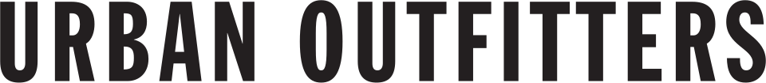

어반아웃피터스 Urban Outfitters
어반아웃피터스(Urban Outfitters)는 미국 필라델피아에 본사를 둔 다국적 라이프스타일 리테일 기업이다. 젊은 성인을 대상으로 의류, 신발, 뷰티, 생활용품과 음반 등을 판매한다.
최종 업데이트

어반아웃피터스는 어떤 브랜드인가
어반아웃피터스는 미국, 영국, 캐나다, 일부 서유럽 국가, 폴란드, 아랍에미리트, 카타르에서 사업을 운영하는 다국적 라이프스타일 리테일 기업이다. 본사는 미국 펜실베이니아주 필라델피아에 있다.
젊은 성인을 겨냥해 여성·남성 패션 의류, 신발, 뷰티·웰니스 제품, 액세서리, 액티브웨어, 생활용품을 취급한다. 음악 상품도 판매하며, 주로 바이닐 레코드와 카세트테이프이다.
상품 상당수는 회사의 도매 부문이 여러 자체 브랜드로 디자인하고 생산한다. 포트폴리오에는 Anthropologie, Free People, Terrain, BHLDN, Vetri Family 레스토랑 그룹이 포함된다.
어반아웃피터스는 어떻게 시작되고 성장했나
1970년 Richard Hayne, Judy Wicks, Scott Belair가 펜실베이니아대학교 창업 수업 프로젝트로 Free People이라는 소매점을 열면서 시작했다. 1970년대에 Scott Belair와 Dick Hayne가 필라델피아 서부에 Free People 매장을 열었고, 매장이 한 곳에서 두 곳으로 늘면서 이름이 Urban Outfitters로 바뀌었다.
1976년에는 법인으로 등록했다. 2007년에는 필라델피아 해군 조선소에 있는 본사 캠퍼스로 National Trust for Historic Preservation의 National Preservation Honor Award를 받았다.
어반아웃피터스의 브랜드 아이덴티티는 무엇인가
의류, 생활용품, 바이닐 음반을 함께 취급하며 Anthropologie, Free People 등 여러 브랜드를 포트폴리오로 운영하는 젊은 층 대상 라이프스타일 리테일러이다.
어반아웃피터스의 대표 제품과 서비스는 무엇인가
브랜드 포트폴리오는 Urban Outfitters, Anthropologie, Free People, Terrain, BHLDN, Vetri Family 레스토랑 그룹으로 구성된다. 2015년 4분기에 필라델피아의 레스토랑 그룹 Vetri Family를 인수할 계획을 발표했으며, Amis Trattoria, Bar Amis, Pizzeria Vetri 등이 여기에 속한다.
2019년에는 구독형 의류 대여 서비스 Nuuly를 출시했고, 이후 URBN 레이블과 다른 브랜드의 의류·액세서리를 사고파는 중고 거래 플랫폼 Nuuly Thrift를 선보였다. 2011년에는 Florian Kaps와 협력해 Polaroid ONE600 즉석카메라와 Type 779 필름의 한정판을 판매하기로 했다.
어반아웃피터스는 지금 어떤 상태인가
2020년 기준으로 어떤 공장에서 의류를 생산하는지 공개하지 않으며, 인사 부서도 없다. 2021년 Fashion Transparency Index에서는 11~20%의 점수를 받았다.
2019년에는 중국계 전직 임원이 인종 및 연령 차별을 이유로 회사를 상대로 소송을 제기했다. 2022년 12월에는 사장 Francis Pierrel의 퇴임을 발표했다.
어반아웃피터스 로고는 어떻게 변해왔나
자주 묻는 질문
어반아웃피터스는 어느 나라 브랜드인가요?
어반아웃피터스는 미국의 리테일·커머스 브랜드입니다.
어반아웃피터스는 언제 설립되었나요?
어반아웃피터스는 1970년 설립되었습니다.
어반아웃피터스의 브랜드 아이덴티티는 무엇인가요?
의류, 생활용품, 바이닐 음반을 함께 취급하며 Anthropologie, Free People 등 여러 브랜드를 포트폴리오로 운영하는 젊은 층 대상 라이프스타일 리테일러이다.
어반아웃피터스의 대표 제품은 무엇인가요?
브랜드 포트폴리오는 Urban Outfitters, Anthropologie, Free People, Terrain, BHLDN, Vetri Family 레스토랑 그룹으로 구성된다.
어반아웃피터스는 어느 기업이 소유하고 있나요?
2020년 기준으로 어떤 공장에서 의류를 생산하는지 공개하지 않으며, 인사 부서도 없다.
어반아웃피터스의 창업자는 누구인가요?
어반아웃피터스의 창업자는 Richard Hayne입니다(위키데이터 기준).
어반아웃피터스의 본사는 어디에 있나요?
어반아웃피터스의 본사는 필라델피아에 있습니다(위키데이터 기준).
출처와 검증
어반아웃피터스 관련 참고: 공식 웹사이트 · 위키데이터 Q3552193 · 영어 위키백과. 브랜드명은 한글과 원어를 함께 표기하되 데이터에 없는 표기는 만들지 않습니다. 기원 국가·설립연도는 검수된 정의문에서 확인된 값을 우선하고, 없을 때만 공식 웹사이트 URL이 일치하는 위키데이터 개체의 값을 씁니다. 위키데이터 값은 2026-11-14 기준입니다.